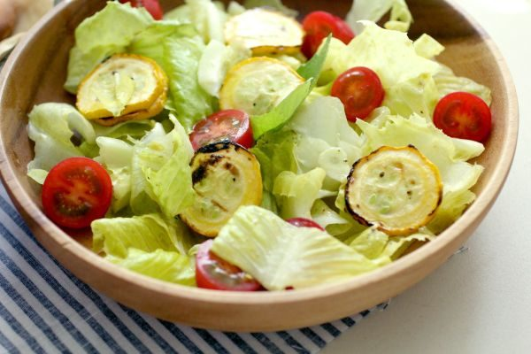

Tomato Dijon Dressing

Photo: with wind (CC BY 2.0)
A creamy salad dressing made from plain yogurt, ketchup, Dijon mustard, and red wine vinegar, chilled overnight.
Directions
- Stir together all ingredients and chill overnight in a covered container.
- HINT: For a more herbal finish, substitute tarragon vinegar and add 1/4 tsp dried tarragon.
- Adding 1/4 cup of relish of your choice makes this a low calorie Russian style dressing.
- Stir together all ingredients (plain yogurt, ketchup, Dijon mustard, red wine vinegar, and salt and pepper to taste).
- Chill overnight in a covered container.
- Hint: For a more herbal finish, substitute tarragon vinegar and add 1/4 tsp dried tarragon.
- Adding 1/4 cup of relish of your choice makes this a low calorie Russian style dressing.
Goes well with
https://baron-3dl.github.io/normans-kitchen/recipe/tomato-dijon-dressing.html